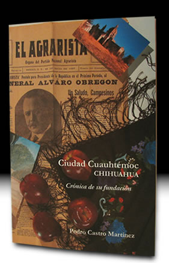

- Inicio
- Publicaciones
- Álvaro Obregón fuego y cenizas de la Revolución Mexicana
- Adolfo de la Huerta El desconocido de Roberto Guzmán Esparza
- A la Sombra de un Caudillovida y muerte del general Francisco R. Serrano
- Soto y Gamagenio y figura
- Adolfo de la Huerta Serie Grandes Protagonistas de la Historia Mexicana
- Historia del Agrarismo en México
- Ciudad Cuauhtémoc, Chihuahuacrónica de su fundación
- Adolfo de la Huerta: la integridad como arma de la revolución
- Adolfo de la Huerta y la Revolución Mexicana
- Fronteras Abiertasgeopolítica y expansionismo en Brasil contemporáneo
- Currículum

ISBN: 970-654-559-X
Editorial: CONACULTA-FONCA- Universidad Autónoma Metropolitana-Iztapalapa, 2000 132 pp., planos, ilustraciones
Ciudad Cuauhtémoc, Chihuahua
crónica de su fundación
Es producto de una investigación en archivos públicos y privados, así como de entrevistas con testigos presenciales, descendientes de protagonistas y conocedores del tema. Su tesis principal radica en que Ciudad Cuauhtémoc es el resultado de la dinámica posrevolucionaria, a partir de los caminos cruzados entre la Hacienda de Bustillos luchando por sobrevivir o liquidarse en las mejores condiciones, los agraristas militantes bajo la guía de Belisario Chávez y el establecimiento de las colonias menonitas provenientes del Canadá.
Réplicas y consultas con el autor: pedrocastro3131@gmail.com
Índice
Prólogo
- Los orígenes remotos
- Los motivos agrarios del presidente Obregón
- Un agrarista llamado Belisario Chávez
- La Hacienda de Bustillos, Obregón y Der Mennoniten
- La colonización menonita
- El presidente Obregón interviene
- Los acuerdos con los agraristas
- Palabras finales
- Apéndices
- Documentos facsimilares
- Planos